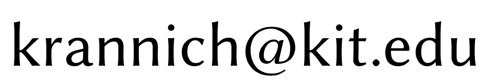
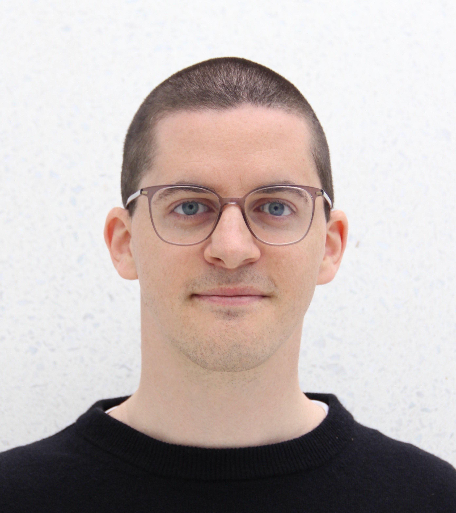

I am a junior professor (assistant professor) at the Karlsruhe Institute of Technology. Previously, I was a postdoc at Mathematics Münster: Dynamics - Geometry - Structure and before that at the University of Cambridge. I received my PhD in October 2018 from the University of Copenhagen.
Contact Information
| Address: |
Karlsruhe Institute of Technology
Department of Mathematics
Englerstraße 2
76131 Karlsruhe
Germany |
| Office: | 1.013 (Kollegiengebäude Mathematik 20.30)
|
| Phone: | +49 (0)721 608 42058
|
| E-mail: |  |
|

|
Research interests
Algebraic and Geometric Topology, in particular: topology of moduli spaces, manifold bundles and their characteristic classes, automorphism and embedding spaces of manifolds, functor calculus, mapping class groups, surgery theory, cobordism categories, configuration spaces, K-theory, and applications to differential geometry.
For further information, see my CV.
Together with Alexander Kupers and Oscar Randal-Williams, I am organising a biweekly online seminar on manifolds, homotopy theory, and related topics (currently on a break).
Preprints
Publications
- Two remarks on spaces of maps between operads of little cubes (arXiv), with Geoffroy Horel and Alexander Kupers.
Higher Structures, 9 (1) (2025) 329-339.
- On Torelli groups and Dehn twists of smooth 4-manifolds (arXiv), with Alexander Kupers.
Bulletin of the London Mathematical Society, 57-3 (2025) 956–963.
- The Disc-structure space (arXiv), with Alexander Kupers.
Forum of Mathematics, Pi, 12 (2024) E26 1–98.
- Mapping class groups of exotic tori and actions by SLₙ(Z) (arXiv), with Mauricio Bustamante, Alexander Kupers, and Bena Tshishiku.
Transactions of the American Mathematical Society, 11 (2024) 1316–1349.
- A note on homotopy and pseudoisotopy of diffeomorphisms of 4-manifolds (arXiv), with Alexander Kupers.
Comptes Rendus Mathématique, 362 (2024) pp. 1515–1520.
- Finiteness properties of automorphism spaces of manifolds with finite fundamental group (arXiv), with Mauricio Bustamante and Alexander Kupers.
Mathematische Annalen 388 (2024) 3321–3371.
- Stability of concordance embeddings (arXiv), with Thomas Goodwillie and Alexander Kupers.
Proceedings of the Royal Society of Edinburgh: Section A Mathematics 154 (6) (2024) 1713–1748. Erratum
- Embedding calculus for surfaces (arXiv), with Alexander Kupers.
Algebraic & Geometric Topology 24-2 (2024) 981--1018.
- A homological approach to pseudoisotopy theory. I (arXiv).
Inventiones Mathematicae 227 (2022) no. 3 1093–1167. Erratum
- An HP2-bundle over S4 with nontrivial Â-genus (arXiv), with Alexander Kupers and Oscar Randal-Williams.
Comptes Rendus. Mathématique Tome 359 (2021) no. 2 pp. 149–154.
- Appendix to Geometric cycles and characteristic classes of manifold bundles (arXiv), by Bena Tshishiku.
Commentarii Mathematici Helvetici 96 (1) (2021) 1–45.
- Mapping class groups of highly connected (4k+2)-manifolds (arXiv).
Selecta Mathematica 26 81 (2020).
- Mapping class groups of simply connected high-dimensional manifolds need not be arithmetic (arXiv), with Oscar Randal-Williams.
Comptes Rendus. Mathématique, Tome 358 (2020) no. 4 pp. 469–473.
- A note on rational homological stability of automorphisms of manifolds (arXiv).
The Quarterly Journal of Mathematics 71 (3) (2020) 1069–1079.
- Some Hermitian K-groups via geometric topology (arXiv), with Alexander Kupers.
Proceedings of the American Mathematical Society 149 (2021) 2745–2752.
- Characteristic numbers of manifold bundles over surfaces with highly connected fibers (arXiv), with Jens Reinhold.
Journal of the London Mathematical Society 102 (2) (2020) 879–904.
- On characteristic classes of exotic manifold bundles (arXiv).
Mathematische Annalen 379 (2021) 1–21. Erratum
- Homological stability of topological moduli spaces (arXiv).
Geometry & Topology 23 (5) (2019) 2397–2474.
Miscellaneous
- Videos of a lecture series on Pontryagin–Weiss classes and diffeomorphisms of discs during the masterclass Homotopical methods in manifold theory Masterclass at the University of Copenhagen in April 2024.
- Pontryagin-Weiss classes. Oberwolfach Reports, to appear.
- Stability of concordance embeddings. Oberwolfach Reports 19 (2022), no. 3, 1979–1982.
- Moduli spaces of h-cobordisms of discs. Oberwolfach Reports 17 (2020), no. 21, 1089–1090.
- Pseudoisotopies of even discs, revisited. Oberwolfach Reports 17 (2020), no. 1, 431–432.
- Weight decompositions and automorphism groups of manifolds (joint with M. Krannich), by Alexander Kupers. Oberwolfach Reports (2019), no. 3, 2223–2227.
- I compiled a list of problems from the workshop on Automorphisms of Manifolds at the Hausdorff Center for Mathematics in Bonn in September 2019.
- A video of me speaking about the Disc-structure space during the conference Manifolds and K-theory: the legacy of Andrew Ranicki at the ICMS in Edinburgh in June 2021.
- A video of me speaking about diffeomorphism groups of discs during the workshop Four Manifolds: Confluence of High and Low Dimensions at the Fields Institute in Toronto in July 2019.
- My thesis (University of Copenhagen, Sep 2018, winner of the SCIENCE PhD Award 2019).
Forthcoming and past talks
- Oct 2025, TBD, Higher Invariants: interactions between arithmetic geometry and global analysis, Regensburg.
- Jul 2025, Configuration spaces and exotic spheres, Bavarian Topology Meeting, Augsburg.
- June 2025, Lecture series: Embedding calculus and applications to diffeomorphism groups, Young Topologists Meeting, Stockholm.
- May 2025, Configuration spaces and exotic spheres, NRW Topology Meeting, Osnabrück.
- Apr 2025, Configuration spaces and exotic spheres, Algebraic Topology Seminar, Columbia.
- Apr 2025, Configuration spaces and exotic spheres, Topology Seminar, Notre Dame.
- Apr 2025, Diffeomorphism groups of discs, Colloquium, Notre Dame.
- Mar 2025, Configuration spaces and exotic spheres, Geometry and Topology Seminar, Toronto.
- Nov 2024, The Disc-structure space, Algebraic Topology Seminar, Princeton.
- Aug 2024, Decomposing high-dimensional manifold theory, Conference: Topology of moduli spaces (on the occasion of Ulrike Tillmann's 60th birthday), Copenhagen.
- Juli 2024, Pontryagin–Weiss classes, Topologie, Oberwolfach.
- May 2024, Pontryagin–Weiss classes, Topology Intercity Seminar, Utrecht.
- Apr 2024, Lecture series: Pontryagin-Weiss classes and diffeomorphisms of discs, Masterclass: Homotopical methods in manifold theory, Copenhagen.
- Feb 2024, Surreal Pontryagin classes, Colloquium (on the occasion of Michael Weiss' retirement), Münster.
- Oct 2023, Exotic tori, actions by SLₙ(Z), and mapping class groups, Geometria em Lisboa Seminar, Lisbon.
- Aug 2023, Automorphisms of the Ed-operad, Workshop: String topology and connections to BV-quantization, symplectic topology and manifold topology, Dublin.
- July 2023, Lecture series: Diffeomorphism groups of discs, Workshop: Algebraic K-theory of spaces, Regensburg.
- June 2023, Exotic tori, actions by SLₙ(Z), and mapping class groups, Oberseminar Differentialgeometrie, Augsburg.
- June 2023, A rational pullback decomposition of spaces of homeomorphisms of manifolds, Oberseminar Topologie, Münster.
- May 2023, Automorphisms of the little d-discs operad, Workshop on Homology of Configuration Spaces and related topics, Paris.
- Mar 2023, Pontryagin classes of Euclidean fibre bundles over spheres, Dublin Mathematics Colloquium, Dublin.
- Feb 2023, Diffeomorphisms of discs, Colloquium, LMU Munich.
- Jan 2023, Manifolds and calculus, Chromatic Homotopy, K-Theory and Functors, CIRM - Luminy.
- Oct 2022, Manifolds and calculus, Ib Fest: Conference on the occasion of Ib Madsen's 80th birthday, Copenhagen.
- Sep 2022, Multirelative connectivity results in geometric topology, 4-Manifolds: from Above and Below, CIRM - Luminy.
- Sep 2022, The Disc-structure spaces, Classifying spaces in homotopy theory: in honour of Ran Levi's 60th Birthday, Edinburgh.
- July 2022, Stability of concordance embeddings, Topologie, Oberwolfach.
- June 2022, The Disc-structure space, Topology Seminar, Kansas State University.
- June 2022, The Disc-structure space, Topology Seminar, Bonn.
- May 2022, Top(d) and orthogonal calculus, Topology Seminar, Stockholm.
- Feb 2022, The Disc-structure space, Higher algebraic structures in algebra, topology and geometry, Institut Mittag-Leffler.
- Feb 2022, Pseudoisotopies of discs and K(Z), Oberseminar Geometrie und Topologie, Göttingen.
- Dec 2021, Smoothing fibre bundles and diffeomorphism groups of discs, IMUNAM Algebraic Topology Seminar, Mexico City.
- Oct 2021, Top(d) and orthogonal calculus, Topology Seminar, Münster.
- July 2021, (In)finiteness properties of automorphism spaces of manifolds, AG-Seminar, Regensburg.
- June 2021, The Disc-structure space, Conference "Manifolds and K-theory: the legacy of Andrew Ranicki", Edinburgh.
- Apr 2021, Embedding calculus, factorisation homology, and surfaces, Séminaire de l'équipe Topologie Algébrique, Université Sorbonne Paris Nord (Paris 13).
- Apr 2021, Embedding calculus in codimension zero, Building Bridges Seminar: Invariants of Embedding spaces, virtual.
- Feb 2021, Smoothing fibre bundles and diffeomorphism groups of discs, Geometry & Topology Seminar, Toronto.
- July 2020, Moduli spaces of h-cobordisms of discs, Topologie, Oberwolfach.
- May 2020, Pseudoisotopies of discs and algebraic K-theory of the integers, Topology Seminar, Purdue.
- May 2020, The pseudoisotopy stable range, Topology Seminar, Bonn.
- Mar 2020, Pseudoisotopies of even discs and algebraic K-theory of the integers, Topology Seminar, Wayne State.
- Mar 2020, Pseudoisotopies of even discs and algebraic K-theory of the integers, Geometry & Topology Seminar, Brown.
- Mar 2020, Pseudoisotopies of even discs and algebraic K-theory of the integers, Topology Seminar, Brandeis.
- Feb 2020, Pseudoisotopies of even discs, revisited, Manifolds and Groups, Oberwolfach.
- Jan 2020, A homological approach to pseudoisotopy theory, Algebraic Topology Seminar, Warwick.
- Dec 2019, A homological approach to pseudoisotopy theory, Topology Seminar, Münster.
- Nov 2019, Diffeomorphism groups of discs, Topology Seminar, Aberdeen.
- Oct 2019, Mapping class groups, signatures, and arithmeticity, MPI Topology Seminar, Bonn.
- July 2019, Diffeomorphism groups of discs, Four Manifolds: Confluence of High and Low Dimensions, Fields Institute Toronto.
- June 2019, Rational homotopy groups of diffeomorphism groups of discs, revisited (short talk), Conference: SYM 10 years old, Copenhagen.
- Apr 2019, Mapping class groups of highly connected manifolds, Geometry Centre Seminar, Utrecht.
- Apr 2019, Mapping class groups of highly connected manifolds, Seminar in Algebra & Geometry, Stockholm.
- Mar 2019, Mapping class groups of highly connected manifolds, Topology Seminar, MIT.
- Jan 2019, Mapping class groups of highly connected manifolds, Geometry and Topology Seminar, Durham.
- Dec 2018, On the signature of bundles over surfaces, Oberseminar Differentialgeometrie, Augsburg.
- Dec 2018, Mapping class groups of highly connected manifolds, Bavarian Geometry/Topology Seminar, Augsburg.
- Dec 2018, Mapping class groups of highly connected manifolds, Workshop "Manifolds" during the programme "Homotopy harnessing higher structures", Newton Institute Cambridge.
- Nov 2018, Detecting exotic smooth structures in diffeomorphism groups, Differential Geometry and Topology Seminar, Cambridge.
- Sept 2018, Topological moduli spaces, E₂-algebras, and homological stability, Workshop Cohomological study of mapping class groups and related topics, Strasbourg.
- June 2018, On the signature of smooth bundles over surfaces, Conference "Manifolds, Groups, and Homotopy", Isle of Skye. (Slides)
- Apr 2018, Characteristic numbers of manifold bundles over surfaces with highly connected fibres, Oxford–Cambridge–Aberdeen Meeting on Manifolds, Cambridge.
- Apr 2018, Homological stability of topological moduli spaces, Topology Seminar, Purdue.
- Apr 2018, Detecting exotic smooth structures in diffeomorphism groups, Topology Seminar, Northwestern.
- Apr 2018, Topological moduli spaces, E₂-algebras, and homological stability, Geometry/Topology Seminar and Topology Seminar (joint), University of Chicago.
- Jan 2018, On characteristic classes of exotic manifold bundles, Topology Seminar, Bonn.
- Jan 2018, On characteristic classes of exotic manifold bundles, Topology Seminar, Karlsruhe.
- Jan 2018, On characteristic classes of exotic manifold bundles, Topology Seminar, Münster.
- Dec 2017, On characteristic classes of exotic manifold bundles, Topology Seminar, Copenhagen.
- July 2017, On the cohomology of moduli spaces of manifolds connect summed with an exotic sphere, Young Topologists' Meeting, Stockholm.
- Mar 2017, Homological stability of E₁-modules over E₂-algebras and twisted stability of topological moduli spaces, Topology Seminar, Aberdeen.
Impressum (Legal notice)
Datenschutz (Privacy)